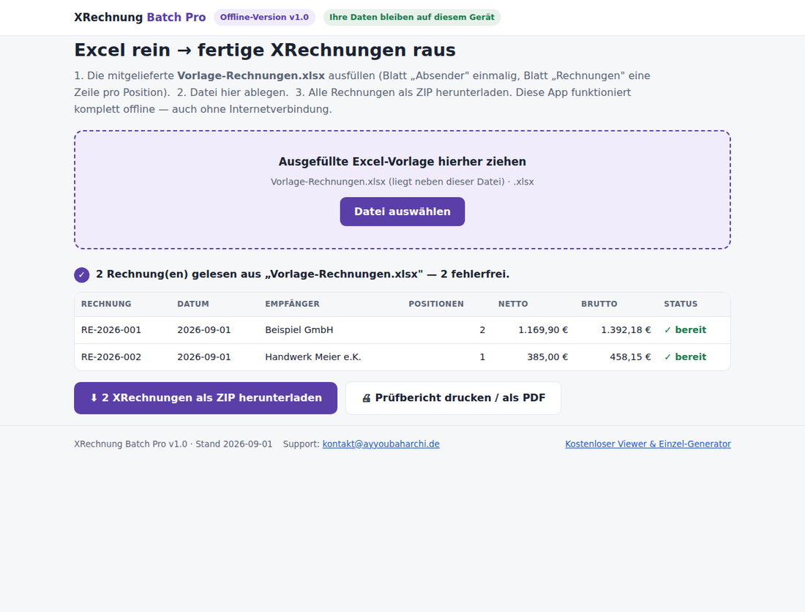

XRechnungen und ZUGFeRD-PDFs aus Excel, alle auf einmal und vollständig offline
Sie schreiben Ihre Rechnungen in Excel? Dann fehlt nur noch wenig: die mitgelieferte Vorlage ausfüllen, die App öffnen und ein ZIP mit allen fertigen Rechnungen herunterladen, wahlweise als XRechnung (XML), als ZUGFeRD-PDF oder in beiden Formaten. XRechnung Batch Pro ist ein Einmalkauf ohne Abo und ohne Cloud; die App arbeitet mit demselben Generator, den auch der kostenlose Einzel-Generator dieser Website nutzt.
Einführungspreis bis 30. September 2026: 39 Euro, danach 49 Euro. Sofortiger Download als ZIP mit App, Excel-Vorlage und Anleitung. Zahlung, Rechnung und EU-Umsatzsteuer über Polar (Merchant of Record). Der Generator wird in der Testsuite gegen den offiziellen KoSIT-Validator geprüft, die erzeugten PDFs gegen die Referenzimplementierung Mustang. Läuft unter Windows, macOS und Linux, auch im Kleinunternehmer-Modus nach § 19 UStG.

Die App nach dem Einlesen einer Excel-Vorlage: Rechnungen geprüft, Summen berechnet, bereit als ZIP.
So funktioniert es
- Excel-Vorlage ausfüllen. Absenderdaten stehen einmalig im Blatt „Absender", danach folgt eine Zeile je Rechnungsposition; mehrere Positionen mit derselben Rechnungsnummer ergeben eine Rechnung. Beispiele und Anleitung liegen bei.
- In die App ziehen. Die Datei XRechnung-Batch-Pro.html öffnet sich per Doppelklick im Browser, auch ohne Internet. Die App prüft jede Rechnung und zeigt Fehler mit der zugehörigen Excel-Zeilennummer.
- Format wählen und ZIP laden. XRechnung 3.0 (XML), ZUGFeRD-PDF (PDF/A-3 mit eingebetteten Daten) oder beides, dazu ein druckbarer Prüfbericht mit Summenübersicht für die Ablage.
Kostenloser Einzel-Generator und Batch Pro im Vergleich
| Einzel-Generator (kostenlos) | Batch Pro (39 Euro) | |
|---|---|---|
| XRechnung 3.0 erstellen (KoSIT-getesteter Generator) | ✓ | ✓ |
| Kleinunternehmer-Modus, gemischte Umsatzsteuersätze | ✓ | ✓ |
| ZUGFeRD-PDF erzeugen (PDF/A-3, Mustang-validiert) | einzeln | im Stapel |
| Rechnungen je Durchlauf | 1 (Formular) | beliebig viele aus Excel |
| Excel-Vorlage mit Anleitung | nein | ✓ |
| Prüfbericht (druckbar, als PDF speicherbar) | nein | ✓ |
| Funktioniert offline | nach dem ersten Laden | ✓ (eigene Datei) |
| Preis | 0 Euro | 39 Euro einmalig |
Für wen ist das gedacht?
Für Selbstständige, kleine Betriebe, Vereine und die Buchhaltungs-Zuarbeit, die regelmäßig mehrere Rechnungen schreiben und dafür kein monatliches Abo-Programm wollen. Vergleichbare Excel-Add-ins kosten 120 bis 400 Euro, Cloud-Lösungen 10 bis 30 Euro im Monat. Ab 2027 und 2028 wird die E-Rechnung im inländischen B2B-Geschäft schrittweise Pflicht; hier steht der Zeitplan.
Häufige Fragen
Bekomme ich Updates?
Ja. Käufer laden über ihren Kaufzugang jederzeit die aktuelle Version herunter. Die ZUGFeRD-PDF-Ausgabe kam auf diesem Weg bereits als kostenloses Update in Version 1.1 dazu.
Kann ich vorher testen, ob mir der Ansatz liegt?
Ja. Der kostenlose Einzel-Generator nutzt denselben Generator und zeigt Ihnen das Ergebnisformat. Wenn Ihnen der Ablauf gefällt, ist Batch Pro derselbe Ablauf in Serie.
Was brauche ich dafür?
Nur Excel oder LibreOffice und einen modernen Browser. Keine Installation, keine Adminrechte, kein Konto.
Wie läuft der Kauf ab?
Über Polar als Merchant of Record: Karte oder weitere Zahlarten, Rechnung inklusive, die EU-Umsatzsteuer wird korrekt abgewickelt. Direkt nach dem Kauf erhalten Sie den Download-Link für das ZIP mit App, Excel-Vorlage und Anleitung.
Gibt es Support?
Ja, per E-Mail an kontakt@ayyoubaharchi.de. Antworten kommen in der Regel innerhalb von ein bis zwei Werktagen.
Hinweis: keine Steuerberatung und keine Rechtsberatung. Prüfen Sie erzeugte Rechnungen vor dem Versand.